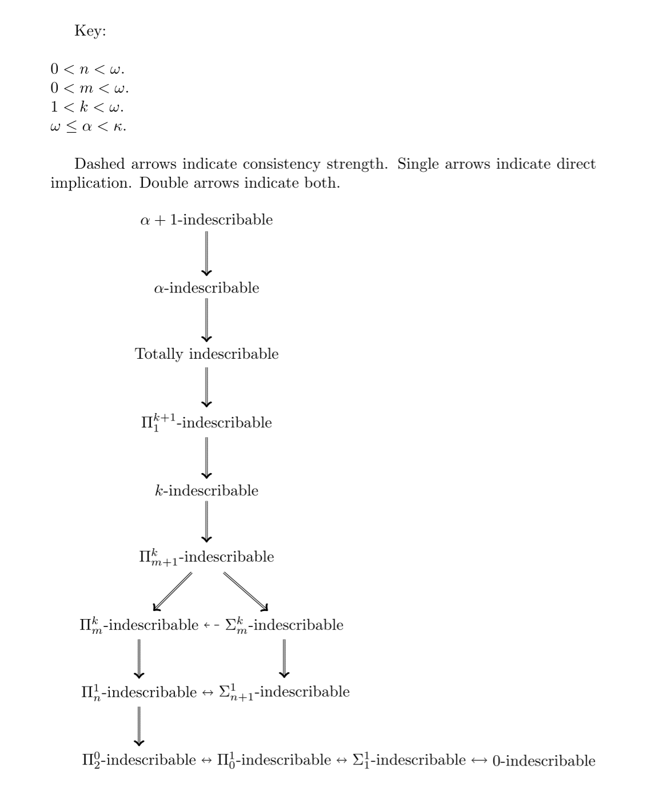

Climb into Cantor’s Attic, where you will find infinities large and small. We aim to provide a comprehensive resource of information about all notions of mathematical infinity.
View the Project on GitHub neugierde/cantors-attic
Quick navigation
The upper attic
The middle attic
The lower attic
The parlour
The playroom
The library
The cellar
Sources
Cantor's Attic (original site)
Joel David Hamkins blog post about the Attic
Latest working snapshot at the wayback machine

A cardinal $\kappa$ is indescribable if it holds the reflection theorem up to a certain point. This is important to mathematics because of the concern for the reflection theorem. In more detail, a cardinal $\kappa$ is $\Pi_{m}^n$-indescribable if and only if for every $\Pi_{m}$ first-order sentence $\phi$:
\[\\forall S\\subseteq V\_{\\kappa}(\\langle V\_{\\kappa+n};\\in,S\\rangle\\models\\phi\\rightarrow\\exists\\alpha<\\kappa(\\langle V\_{\\alpha+n};\\in,S\\cap V\_{\\alpha}\\rangle\\models\\phi))\]Likewise for $\Sigma_{m}^n$-indescribable cardinals.
Here are some other equivalent definitions:
In other words, if a cardinal is $\Pi_{m}^n$-indescribable, then every $n+1$-th order logic statement that is $\Pi_m$ expresses the reflection of $V_{\kappa}$ onto $V_{\alpha}$. This exercises the fact that these cardinals are so large they almost resemble the order of $V$ itself. This definition is similar to that of shrewd cardinals, an extension of indescribable cardinals.
Totally indescribable cardinals are $\Pi_m^n$-indescribable for every natural $m$ and $n$ (equivalently $\Sigma_m^n$-indescribable for every natural m and n, equivalently $\Delta_m^n$-indescribable for every natural $m$ and $n$). This means that every (finitary) formula made from quantifiers, $\in$ and a subset of $V_{\kappa}$ reflects from $V_{\kappa}$ onto a smaller rank.
$Q$-indescribable cardinals are those which have the property that for every $Q$-sentence $\phi$:
\[\\forall S\\subseteq V\_\\kappa(\\langle V\_\\kappa;\\in,S\\rangle\\models\\phi\\rightarrow\\exists\\alpha<\\kappa(\\langle V\_\\alpha;\\in,S\\cap V\_\\alpha\\rangle\\models\\phi))\]$\beta$-indescribable cardinals are those which have the property that for every first order sentence $\phi$:
\[\\forall S\\subseteq V\_\\kappa(\\langle V\_{\\kappa+\\beta};\\in,S\\rangle\\models\\phi\\rightarrow\\exists\\alpha<\\kappa(\\langle V\_{\\alpha+\\beta};\\in,S\\cap V\_\\alpha\\rangle\\models\\phi))\]There is no $\kappa$ which is $\kappa$-indescribable. A cardinal is $\Pi_{<\omega}^m$-indescribable iff it is $m$-indescribable for finite $m$. Every $\omega$-indescribable cardinal is totally indescribable.
Here are some known facts about indescribability:
$\Pi_2^0$-indescribability is equivalent to strong inaccessibility, $\Sigma_1^1$-indescribablity, $\Pi_n^0$-indescribability given any $n>1$, and $\Pi_0^1$-indescribability.(Kanamori, 2009) $\Pi_1^1$-indescribability is equivalent to weak compactness. (Jech, 2003; Kanamori, 2009)
$\Pi_n^m$-indescribablity is equivalent to $m$-$\Pi_n$-shrewdness (similarly with $\Sigma_n^m$). (Rathjen, 2006)
Ineffable cardinals are $\Pi^1_2$-indescribable and limits of totally indescribable cardinals. (Jensen & Kunen, 1969)
$\Pi_n^1$-indescribability is equivalent to $\Sigma_{n+1}^1$-Indescribability. (Kanamori, 2009)
If $m>1$, $\Pi_{n+1}^m$-indescribability is stronger (consistency-wise) than $\Sigma_n^m$ and $\Pi_n^m$-indescribability; every $\Pi_{n+1}^m$-indescribable cardinal is also both $\Sigma_n^m$ and $\Pi_n^m$-indescribable and a stationary limit of such for $m>1$.(Kanamori, 2009) If $m>1$, the least $\Pi_n^m$-indescribable cardinal is less than the least $\Sigma_n^m$-indescribable cardinal, which is in turn less than the least $\Pi_{n+1}^m$-indescribable cardinal.(Kanamori, 2009)
If $\kappa$ is $Π_n$-Ramsey, then $\kappa$ is $Π_{n+1}^1$-indescribable. If $X\subseteq\kappa$ is a $Π_n$-Ramsey subset, then $X$ is in the $Π_{n+1}^1$-indescribable filter.(Feng, 1990) If $\kappa$ is completely Ramsey, then $κ$ is $Π_1^2$-indescribable.(Holy & Schlicht, 2018)
Every $n$-Ramsey $κ$ is $Π^1_{2 n+1}$-indescribable. This is optimal, as $n$-Ramseyness can be described by a $Π^1_{2n+2}$-formula.(Nielsen & Welch, 2018) Every $<ω$-Ramsey cardinal is $∆^2_0$-indescribable.(Nielsen & Welch, 2018) Every normal $n$-Ramsey $κ$ is $Π^1_{2 n+2}$-indescribable. This is optimal, as normal $n$-Ramseyness can be described by a $Π^1_{2 n+3}$-formula.(Nielsen & Welch, 2018)
Every measurable cardinal is $\Pi_1^2$-indescribable. Although, the least measurable is $\Sigma_1^2$-describable. (Jech, 2003)
Every critical point of a nontrivial elementary embedding $j:M\rightarrow M$ for some transitive inner model $M$ of ZFC is totally indescribable in $M$. (For example, rank-into-rank cardinals, $0^{#}$ cardinals, and $0^{\dagger}$ cardinals). (Jech, 2003)
If $2^\kappa\neq\kappa^+$ for some $\Pi_1^2$-indescribable cardinal, then there is a smaller $\lambda$ such that $2^\lambda\neq\lambda^+$. However, assuming the consistency of the existence of a $\Pi_n^1$-indescribable cardinal $\kappa$, it is consistent for $\kappa$ to be the least cardinal such that $2^\kappa\neq\kappa^+$. (Hauser, 1991)
Transfinite $Π^1_α$-indescribable has been defined via finite games and it turns out that for infinite $α$, if $κ$ is $Π_α$-Ramsey, then $κ$ is $Π^1_{2 ·(1+β)+ 1}$-indescribable for each $β < \min \{α, κ^+\}$.(Sharpe & Welch, 2011)